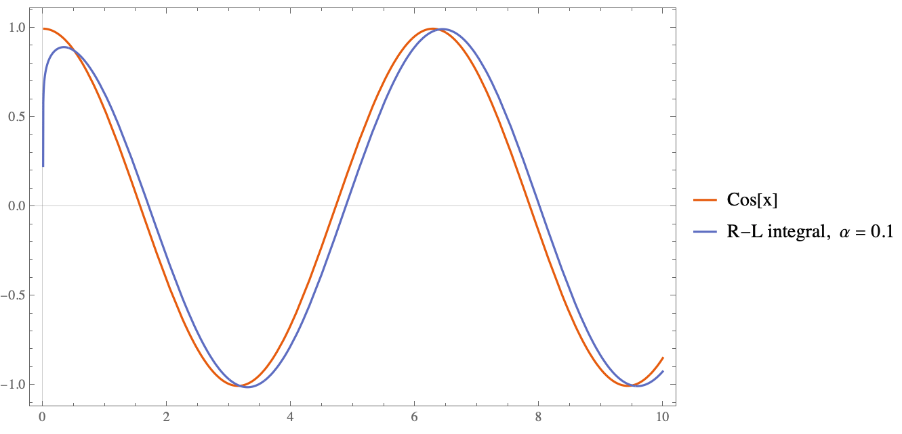

Kesirli türev, bir sistemin geçmiş durumlarını unutmayıp ve
bu geçmişi uygun bir ağırlık fonksiyonuyla hesaba katarak sistemin
mevcut andaki değişimini ölçen bir türev operatörüdür.
\( \alpha \to 1 \): Sistem geçmişi daha az önemser, anlık değişime
odaklanır
(klasik türevin sınırı).
\( \alpha \to 0 \): Sistem geçmişi
daha fazla önemser, tüm geçmiş bilgileri hesaba
katar (kesirli integral davranışı).
Bir Analoji:
Yankı & Gitar Teli
Kapalı bir odada bir gitar telinin çıkardığı sesi düşünelim. Burada
kesirli türevin derecesi \( \alpha \), sistemin
hafıza gücü / yankı etkisi gibidir:
\( \alpha \to 0 \): Odaya ait yankı süresi çok uzundur. Çıkan her
yeni nota, önceki notaların uzun yankılarıyla karışır; sistem
geçmişi kuvvetle hatırlar.
\( \alpha \to 1 \): Yankı süresi çok kısadır (ya da yoktur). Sesi
neredeyse yalnızca o anki hâliyle duyarız; geçmiş notaların etkisi
azalır.
Klasik vs Kesirli Türev
Özellik
Klasik türev
Kesirli türev
Mertebe
Tam sayı \(1,2,3,\dots\)
Reel / kompleks \( \alpha\in\mathbb{R}\cup\mathbb{C} \)
Riemann–Liouville, Caputo, Grünwald–Letnikov … Tüm tanımlar,
tam-sayı türevi ile kesirli integrali birleştirir.
Yerel / Global
Yerel – yalnızca \(x\) civarındaki değerler
gerekir.
Yarı-global – türev noktası ile
geçmiş arasında integral içerir; sistem önceki
davranışı da hesaba katar.
Klasik vs Kesirli Türev
Özellik
Klasik türev
Kesirli türev
Başlangıç koşulları
2. mertebe ODE için \(y(0)\) ve \(y'(0)\) yeterlidir.
Caputo tanımını kullansanız bile, kesirli mertebe $\alpha$ için $\lceil\alpha\rceil$ adet klasik başlangıç koşulu gerekir; çünkü çözüm, sistemin geçmişine duyarlıdır.
Önce formülü görelim; ayrıntılara az sonra geçeceğiz.
Kesirli İntegralin Çalışması

RL Kesirli İntegral — Özellikler
Klasik integrali geneller; \( \alpha \) tam sayı olmak zorunda değildir.
Geçmişe bağımlı (bellekli) sistemleri tanımlamak için uygundur.
Fikir:
\((n-1)! \;\longrightarrow\; \Gamma(\alpha)\)
ile integral mertebesi sürekli yapılır.
Cauchy’nin Çok Katlı İntegrali
\[
J_a^{n}f(x)=
\frac{1}{(n-1)!}\!
\int_{a}^{x}(x-t)^{n-1}\,f(t)\,dt,
\qquad n\in\mathbb N
\]
RL Tanımının Geçerliliği
Teorem.
Eğer \(f \in L_1[a,b]\) ve \(n > 0\) ise
\(J_a^{n}f\) tanımlıdır ve
\(J_a^{n}f \in L_1[a,b]\).
RL integrali teorik olmanın ötesinde,
geniş bir fonksiyon sınıfı üzerinde geçerlidir.
\(L_1[a,b]\) uzayındaki her fonksiyon için
\(J_a^{n}f\) yine aynı uzayda kalır; işlem tutarlı ve güvenilirdir.
Temel Fikir:
\[
J_a^{n} f(x)=
\frac{1}{\Gamma(n)}
\int_a^{x} (x-t)^{\,n-1}\,f(t)\,dt
\]
Çekirdek \((x-t)^{n-1}\) integrallenebilir olduğu için
integral her \(f\in L_1\) için tanımlıdır.
Cauchy → RL Genellemesi
\((n-1)! \;\longrightarrow\; \Gamma(\alpha)\)
\(n\in\mathbb N \;\longrightarrow\; \alpha\in\mathbb R^{+}\)
Böylece \(J_a^{\alpha} f(x)\) formülü elde edilir.
Sonuç:
Cauchy çok katlı integrali → Riemann-Liouville kesirli integrale.
Caputo – fiziksel anlamlı başlangıç koşulları içeren modeller.
Leibniz-L Türevi
Temel Amaç
Kesirli diferansiyel \(d^{\alpha}f(x)\), yalnızca pozitif \(dx\) için değil,
hem pozitif hem de negatif artımlar için gerçel değerli
ve geometrik anlamlı bir ifade olmalıdır.
Normalde bir \( y = f(x) \) eğrisine bir noktada teğet çizeriz. Bu doğru, o noktadaki "eğimi", yani klasik türevi verir.
Peki, kesirli türev (örneğin \( \alpha = 0.5 \)) kullanırsak, hâlâ eğriye "doğru gibi" bir teğet çizebilir miyiz?
Kesirli Teğet Uzayı
“Eğer \( f(x) \) için \( d^\alpha f(x) \) alıyorsak, o zaman \( dx \) yerine \( d^\alpha x \) de almalıyız!”
Yatay eksen: \( d^\alpha x \)
Dikey eksen: \( d^\alpha f(x) \)
Kesirli Teğet Doğrusu Ne Anlatır?
Bir eğri \( y = f(x) \) düşünelim.
Klasik \( dx \) yerine, \( d^\alpha x \) ile çalışalım.
Dikey eksende \( d^\alpha f(x) \) olur.
Bu iki eksen üzerinde çizilen doğru: kesirli teğet doğrusu.
Yerel olarak fonksiyonun kesirli davranışını temsil eder.
Klasik ve Kesirli Teğet Karşılaştırması
Klasik
Kesirli
\( df \approx f'(x)\,dx \)
\( d^\alpha f(x) \approx D^\alpha f(x)\,d^\alpha x \)
Teğet bir doğrudur
Kesirli uzayda teğet yine doğrudur
Eksenler: \( dx \), \( df \)
Eksenler: \( d^\alpha x \), \( d^\alpha f(x) \)
Kesirli Ark Uzunluğu: Kavram ve Amaç
Bu bölümde, bir eğrinin ark (yay) uzunluğunun
klasik türev yerine kesirli türevler kullanılarak nasıl tanımlanabileceği incelenecektir.
Temel Amaç
Eğer bir fonksiyon \( y = f(x) \) klasik anlamda türevlenemiyorsa ancak
kesirli mertebeden türevlenebilirse, bu eğrinin uzunluğu nasıl hesaplanır?
Kesirli Ark Uzunluğu
Temel Mantık:
Klasik türev alınamayan (örneğin fraktal) fonksiyonlarda,
kesirli türev ile ark uzunluğu hesaplanabilir.
1. Kesirli Diferansiyel:
Klasik: \( dy = f'(x)\,dx \)
Kesirli:
\[
d^\alpha y =
\frac{{}_0^L D_x^\alpha f(x)}{{}_0^L D_x^\alpha x}
\cdot d^\alpha x
\]
Kesirli Ark Uzunluğunun Önemi ve Uygulama Alanları
Bu kavram ne işe yarar?
Klasik türevi tanımlı olmayan fonksiyonlar:
Fraktal eğriler gibi düzgün olmayan geometrilerin "uzunluğunu" ölçmek için uygundur.
Klasik türev tanımsız olsa bile, kesirli türev tanımlı olabilir.
Mühendislik ve Fizik Uygulamaları:
Viskoelastik malzemelerin deformasyon analizleri
Anormal difüzyon süreçlerinde yörünge takibi
Sinyal işleme: Düzgün olmayan sinyallerin karakterizasyonu
Kesirli Teğet Yapıları
Temel Mantık:
Klasik diferansiyel geometrideki teğet vektör,
teğet doğrusu ve normal düzlem kavramları,
kesirli türevlerle genelleştirilebilir.
Kesirli teğet düzlem, klasik düzlemden belirgin şekilde farklıdır
\( \alpha \) azaldıkça düzlemin eğimi değişir → yüzeyin lokal davranışına duyarlı hale gelir
Pürüzlü, fraktal veya klasik türevlenemeyen yüzeylerde daha uygun bir tanım sunar
Bu yaklaşım, klasik diferansiyel geometrinin kesirli genellemesidir
Sonuç
Kesirli diferansiyel geometri, klasik türev kavramının ötesine geçerek
fraktal, pürüzlü veya klasik anlamda türevlenemeyen yüzeyleri
tanımlamak ve analiz etmek için güçlü bir çerçeve sunar.
Bu bağlamda, kesirli teğet düzlemi kavramı:
Klasik geometriyle yapısal tutarlılığını korur,
Ancak yüzeyin yerel davranışını kesirli mertebede dikkate alır,
Ve özellikle düzgün olmayan yüzeylerin daha gerçekçi şekilde modellenmesini sağlar.
Dolayısıyla, bu yaklaşım sadece teorik değil, aynı zamanda
malzeme bilimi, fraktal modelleme, biyomekanik ve sayısal analiz gibi çok sayıda uygulama alanı için de yenilikçi çözümler sunmaktadır.